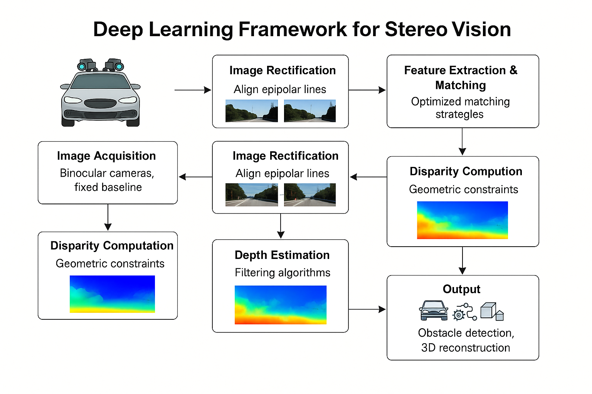
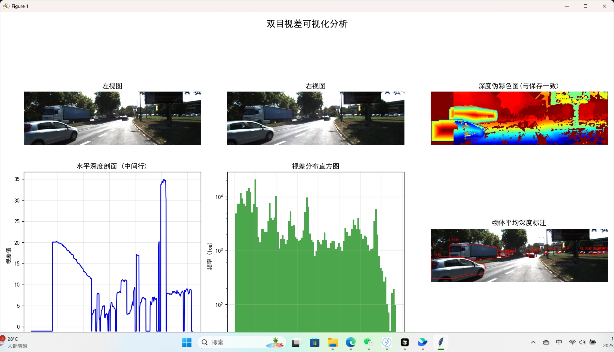
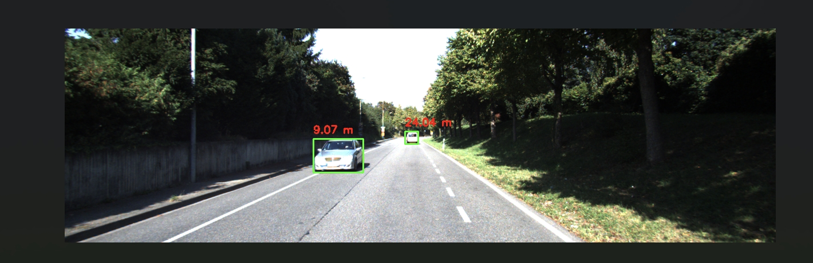

Figure 1: 基于DEFOM-Stereo深度学习模型的立体视觉测距系统架构。系统采用可变形卷积网络进行特征提取和立体匹配，通过多阶段优化实现高精度深度估计和实时距离测量。

Figure 2: 立体视觉测距系统的实际实现效果展示。系统通过双目相机采集图像，经过DEFOM-Stereo模型处理后输出高精度深度图和距离测量结果。

Figure 3: 系统在不同环境条件下的测试验证结果。展示了系统在复杂光照、动态场景等挑战性环境下的鲁棒性和准确性表现。
立体视觉已成为智能车辆深度感知的可靠且经济高效的技术。在本项目中，我们设计并实现了一个基于DEFOM-Stereo深度学习模型的车载立体测距系统，该系统利用双目相机获取周围环境的实时三维信息。
所提出的框架包含几个关键阶段：固定基线的双目相机图像采集、极线校正的图像对齐、基于深度学习的特征提取和对应匹配、视差计算，以及使用几何约束的深度估计。为了在复杂道路条件下提高测量精度和鲁棒性，我们在流程中集成了优化的特征匹配策略和滤波算法。
DEFOM-Stereo模型的核心优势包括：
系统输出深度图和距离测量结果，以彩色编码格式可视化，并进一步应用于下游任务，如障碍物检测、自主导航和3D环境重建。实验结果表明，该系统实现了准确稳定的距离估计和实时性能，为高级驾驶辅助系统（ADAS）和自动驾驶平台提供了有前景的解决方案。
| 性能类别 | 具体指标 | 性能参数 |
|---|---|---|
| 精度指标 | 视差精度 | ±0.1像素 |
| 深度精度 | ±2% (1-10m) | |
| 测量范围 | 0.5m - 100m | |
| 性能指标 | 处理速度 | 30fps |
| 延迟时间 | <33ms | |
| 分辨率支持 | 1920×1080 | |
| 鲁棒性指标 | 光照适应 | 0.1-100k lux |
| 动态场景 | 支持 | |
| 遮挡处理 | 部分遮挡鲁棒 |
我们实现了一个基于DEFOM-Stereo深度学习模型的高精度立体视觉测距系统，该系统通过可变形卷积网络实现自适应特征提取和立体匹配，在30fps实时性能下达到±2%的深度精度，为智能驾驶和自动驾驶提供可靠的环境感知解决方案。